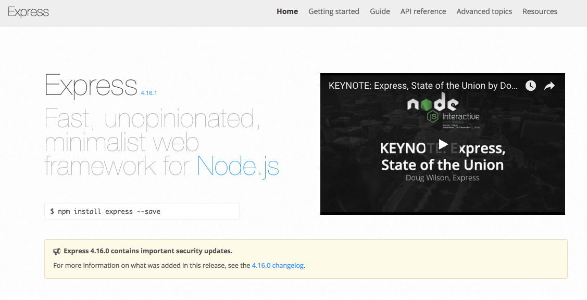

Introduction to Node.js
By Nabil Naffar & Danny VernovskyBecause why not!
In This Module
Node.js AFAP As fast as possible
Hello Express.js
HTTP DEMO
Middlewares
REST API
Node.js noob to pro
process.env
__dirname, __filename
fs API
path API
Hello Express.js
Express Hello World
$ npm install express --save
const express = require('express')
const app = express()
app.get('/', (req, res) => res.send('Hello World!'))
app.listen(3000, () => console.log('Example app listening on port 3000!'))

Express.js middlewares
Just a function
executes in a queue fasion
responsible to call next middleware